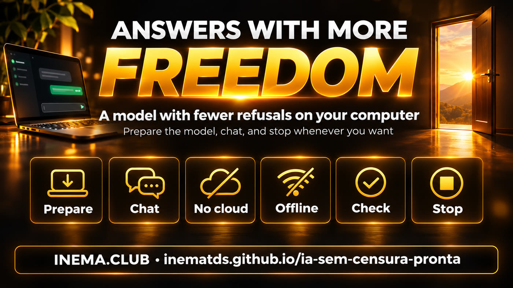

Prepare
The kit checks the Ollama runtime and downloads the weights, which are the model files. This preparation requires an internet connection.
The ready-to-use uncensored AI kit selects a model with fewer refusals and shows you how to run it. Download the weights, start a conversation, and control when the process ends.
This free kit runs a model published as abliterated: a modified version designed to have fewer refusals. It is for anyone who wants to try this type of model in practice, with conversation and text reading. The model runs on the machine where the kit is installed, with no external inference API. You need Python, Ollama, and enough memory. Fewer refusals do not guarantee that it will accept every request or answer every question correctly.

Audio in Portuguese. Demonstration of the two kits, with real results and their limitations. Watch on YouTube
The program runs the model, keeps a short conversation context, and displays the answer in the terminal. The terminal is the window where you enter commands and read the result.
The kit checks the Ollama runtime and downloads the weights, which are the model files. This preparation requires an internet connection.
Type your question or provide a text file. The answer is generated on the machine where the kit is installed.
When you exit, the kit unloads its model and stops its own instance. It does not shut down Ollama used by other projects.
The kit is executable code, with a launcher, model profile, and real test. It is not a decision brief. The conversation appears in the terminal; this version has no browser chat app.
This is about who receives the data. The private kit processes data on the computer and offers a Linux setup with no interface for accessing the internet. The model may still refuse requests.
This is about response restrictions. The kit uses an abliterated version identified by its name and the weights' digest. It also runs locally here; fewer refusals do not guarantee privacy or quality.
You are viewing Uncensored AI, ready to use. The other kit is Private AI, ready to use. Each kit serves its own purpose.
Run on Linux on 15/11/2026, using the real model, one at a time. The models were unloaded afterward. These results apply to the cases described; they are not an overall ranking.
In addition, all 14 software tests passed. They check for an occupied port, missing model, cloud access, redirects, empty responses, and process lifecycle using a simulated server. The real-model test is recorded separately.
A model with fewer refusals can run on your computer, on your own server, or through an external service. Who runs the model and what restrictions it has are separate choices.
In these kits, the model runs on the machine where you install the code. You can also install the code on your own server and use it from the terminal over SSH, a protected remote connection. In that case, the content goes to that server, so consider trust in its operator and access controls. Cloud deployment was not tested in this release.
There is no ready-made integration with external inference providers. The configuration keeps the service bound to the machine's local address. The public site is only a guide; your questions are not sent through this page.
You do not need this section to understand the information above.
Default model: huihui_ai/Qwen3.8-abliterated:27b. Approximately 18 GB of weights; 32 GB of RAM recommended. Working memory use is greater than the weight size and depends on the runtime. The conversation has a short context of 2048 text units, called tokens. No extra Python dependencies are required.
Runtime is the program that runs the model; here, it is Ollama. Digest is the exact identification of the model files, used to detect a version change. Abliterated is a modified version designed to reduce refusals. Network namespace is the Linux feature that gives the process its own separate network. If offline mode reports a permission error, your Linux system has not enabled this feature: use normal local mode without claiming isolation, or ask the administrator to enable user namespaces.
Install Python 3.10 or newer, Ollama, and, if you want to clone the repository, Git. You can also download the ZIP and extract the folder without Git. On Windows, select the option to add Python to PATH, which lets you call it from the terminal. After installing, open a new terminal.
python3 --version ollama --version
On Windows, replace python3 with py if needed. On Ubuntu, you can install Python and Git with:
sudo apt update sudo apt install python3 git
With Git: use this method if you installed Git.
git clone https://github.com/inematds/ia-sem-censura-pronta.git cd ia-sem-censura-pronta python3 ia.py diagnostico python3 ia.py preparar
Downloaded the ZIP: extract the file. On Windows, open the folder containing ia.py, click the address bar, type powershell, and press Enter. On Linux/macOS, open Terminal and enter the extracted folder with cd; if you saved the ZIP in Downloads, use the example below. If you saved it elsewhere, adjust only the folder path.
cd ~/Downloads/ia-sem-censura-pronta-main python3 ia.py diagnostico python3 ia.py preparar
On Windows, once you are in the folder in PowerShell, run only the two Python commands, using py if needed. You can also double-click preparar.cmd and then conversar.cmd. Do not run git clone if you chose the ZIP.
Preparation downloads or checks the model files. If the weights' identification changes, the kit shows the expected and found digest. Check the model on the tag's official page; only then, if you decide to accept the new version, edit digest_esperado in perfil.json using the identification found. If you cannot confirm the change, keep the value and do not proceed with the different weights.
python3 ia.py verificar python3 ia.py conversar
The test should answer 42 to the sum 17 + 25. During the conversation, type /limpar to reset the context and /sair to exit. The kit keeps only a few recent messages in memory and does not save a history.
Prepare the weights first. The computer stays connected for other programs; only the kit's network is isolated.
sudo apt install bubblewrap iproute2 bash sem-rede.sh verificar bash sem-rede.sh conversar
This mode requires user namespaces to be allowed by the system. The isolated network contains only the local interface lo. It isolates the network, not files. On macOS/Windows, use the normal local mode and manually check by disconnecting Wi-Fi/cable after preparing; these systems were not tested in this release.
python3 ia.py perguntar --arquivo exemplos/primeiro-pedido.txt
Answers are text; commands suggested by the AI are not executed. For long documents, send smaller excerpts. For calculations, compare the result against an external reference.
There is no guarantee of accuracy or of accepting any particular request. This workflow's protections do not cover malware, computer administrators, screen recording, backups, or compromised components. The installation does not include a graphical interface, voice, or agents that execute tools. The kit's code and messages are in Portuguese.